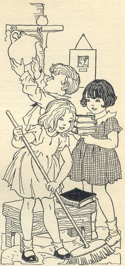
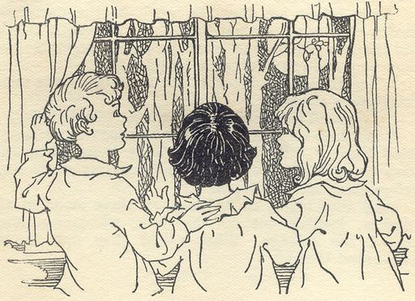
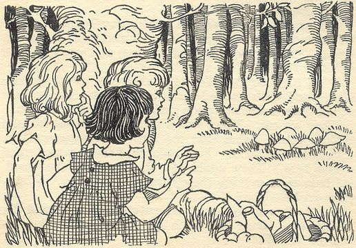
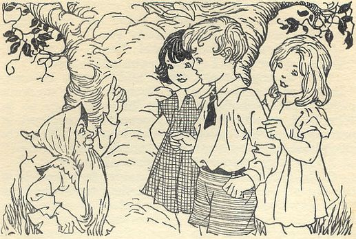
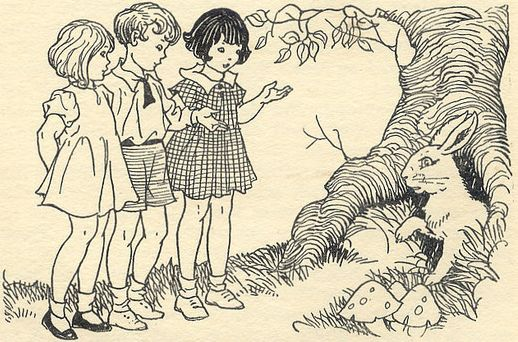
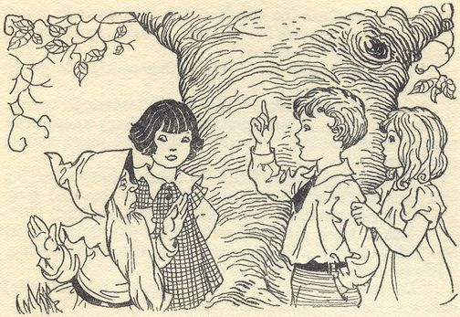
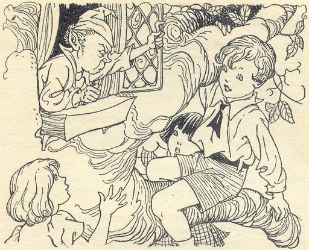
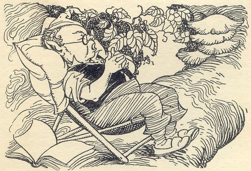
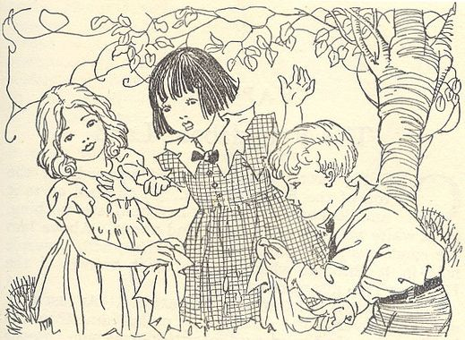
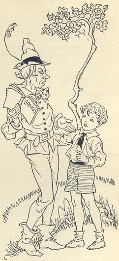

| 91 Conversations from The Enchanted Wood (Faraway Tree #1) | ||
| # | Text | Saved |
|---|---|---|
| 1/91 | 1.1 explain: Jo, Bessie, and Fanny had always lived in a town. Now Father is moving his family to the country for his new job. | Sat Dec 31 00:35:10 2022 |
| 2/91 | 1.2 Jo: “What fun to be in the country!” “I shall learn all about animals and birds!” 1.3 Bessie: “And I shall pick as many flowers as I want to,” 1.4 Fanny: “And I shall have a garden of my own,” |
Sun Jan 1 10:39:07 2023 |
| 3/91 | 1.5 explain: Jo, Bessie, and Fanny are excited on the moving day. A small van comes to the door and two men help Father and Mother load the van. The van drives away when it's full. Jo, Bessie, and Fanny put on their coats and hats and go with Father and Mother to catch a train at the train station. | Sat Dec 17 16:40:29 2022 |
| 4/91 | 1.6 cried Jo: “Now we’re off!” 1.7 sang Bessie: “The country, the country!” 1.8 Fanny: “We might see fairies there!” |
Sat Dec 17 16:46:46 2022 |
| 5/91 | 1.9 explain: The train embarked out of the station. Jo, Bessie, and Fanny watch the dirty houses race by. Jo, Bessie, and Fanny hate the town and long to be in the clean country with flowers growing everywhere and birds singing in the hedges. | Sat Dec 17 18:59:50 2022 |
| 6/91 | 1.10 Jo: “We might have adventures in the country,” “There will be streams and hillsides, big fields and dark woods. Oooh, it will be lovely!” 1.11 Father: “You won’t have any more adventures in the country than you will have in the town,” “I dare say you will find it all very dull.” |
Sat Dec 17 19:04:58 2022 |
| 7/91 | 1.12 explain: Father was proven wrong that the country would be as dull as the city. | Sat Dec 17 19:12:42 2022 |
| 8/91 | 1.13 explain: The train arrives at their stop. A porter loads their bags into a barrow. They proceed to walk to their cottage. | Sat Dec 17 19:14:51 2022 |
| 9/91 | 1.14 Bessie: “I wonder what our cottage will be like?” 1.15 Fanny: “And I wonder if we’ve got a garden?” |
Sat Dec 17 19:16:08 2022 |
| 10/91 | 1.16 explain: Father can't afford transportation from the train station to the cottage so they must walk. Jo, Bessie, and Fanny were soon fatigued from the walk and fell silent. They wished for a cup of milk and a cosy bed as they walked. | Sat Dec 17 19:27:03 2022 |
| 11/91 | 1.17 explain: Finally they arrived at the cottage which was sweet and worth all the walk. The cottage was lovely with roses on the walls and honeysuckle around the entrance. | Sat Dec 17 19:30:22 2022 |
| 12/91 | 1.18 explain: The moving van had already arrived and two men were moving furniture into the cottage. Father helped the men while Mother went to the kitchen to make them all a hot drink. | Sat Dec 17 19:32:24 2022 |
| 13/91 | 1.19 explain: They were so tired that they drank hot milk, ate biscuits, and tumbled into their roughly-made beds. In a minute Bessie and Fanny were asleep in their small room, and Jo too in his smaller room. | Sat Dec 17 19:37:17 2022 |
| 14/91 | 1.20 explain: Jo, Bessie, and Fanny woke up excited to see the morning through the strange windows. They soon dressed and were out into the little garden, running through the long grass and smelling the roses growing all around. | Sat Dec 17 23:43:14 2022 |
| 15/91 | 1.21 explain: Mother cooked eggs for their breakfast, and they ate it hungrily. | Sun Dec 18 02:27:37 2022 |
| 16/91 | 1.22 said Jo, as he looked out the window to the far-away hills: “It’s lovely to be in the country!” 1.23 Bessie: “We can grow vegetables in the garden,” 1.24 Fanny: “There will be glorious walks all round,” |
Sat Dec 31 00:01:50 2022 |
| 17/91 |  EVERY ONE HELPED TO GET THE LITTLE HOUSE STRAIGHT AND TIDY. |
Sat Dec 31 00:02:45 2022 |
| 1.25 explain: Everyone helped tidying up the little house. Father was going to work tomorrow. Mother hoped to work washing someone's laundry. She would then buy a few hens. | Sat Dec 31 00:04:05 2022 | |
| 18/91 | 1.26 said Fanny happily: “I shall collect the eggs each morning and evening,” 1.27 Jo: “Let’s go out and see what the country round about is like,” “Can you spare us for an hour, Mother?” 1.28 Mother: “Yes, run along,” |
Sat Dec 31 00:16:45 2022 |
| 19/91 | 1.29 explain: Jo, Bessie, and Fanny explored all round about. They crossed a field of pink clover that's full of bees. d= Sat Dec 31 00:24:35 2022 They paddled in a small brown stream in the sunshine under the willow trees. | Sat Dec 31 00:24:33 2022 |
| 20/91 | 1.30 explain: Then they came to the wood not far behind their cottage, coming after the overgrown lane and a narrow ditch separating them. | Sat Dec 31 00:25:26 2022 |
| 21/91 | 1.31 said Bessie in delight: “A wood!” “We shall be able to have picnics here!” 1.32 said Jo thoughtfully: “It’s rather a mysterious sort of wood,” “Don’t you think so, Bessie?” 1.33 Bessie: “Well, the trees are rather thick, but they seem about the same as any others,” 1.34 Fanny: “They don’t quite,” “The noise the leaves make is different. Listen!” |
Sun Jan 1 10:06:22 2023 |
| 22/91 | 1.35 explain: Fanny was right. The leaves did not rustle like the other nearby trees did. | Sun Jan 1 10:09:40 2023 |
| 23/91 | 1.36 Bessie: “It’s almost as if they were really talking to one another,” “Whispering secrets— real secrets, that we just can’t understand.” 1.37 Fanny: “It’s a magic wood!” |
Sun Jan 1 10:13:47 2023 |
| 24/91 | 1.38 explain: They stood quietly and listened. 1.38 said the trees in the wood: “Wisha-wisha-wisha-wisha-wisha!” |
Sun Jan 1 10:14:42 2023 |
| 25/91 | 1.39 Bessie: “There might be fairy-folk in there,” “Shall we jump over the ditch and go in?” 1.40 Jo: “No,” “We might get lost. Let’s find our way around before we go into big woods like this.” 1.41 suddenly came their Mother: “Jo! Bessie! Fanny!” “Tea-time, tea-time!” |
Sun Jan 1 10:17:58 2023 |
| 26/91 | 1.42 explain: Jo, Bessie, and Fanny felt hungry and ran back home. Mother served new bread with strawberry jam and they ate a loaf between them. | Sun Jan 8 23:28:35 2023 |
| 27/91 | 1.43 explain: Father returned as Jo, Bessie, and Fanny were finishing tea. Father had been shopping for Mother in the village three miles away and he was hungry and tired. | Wed Jan 11 20:19:25 2023 |
| 28/91 | 1.44 Bessie, pouring Father out a big cup of tea: “We’ve been exploring everywhere, Father,” 1.45 Fanny: “We’ve found a lovely wood,” 1.46 Jo: “It’s a queer sort of wood,” “The trees really seem to be talking to one another, Father.” 1.47 Father: “That must be the wood I’ve heard about this afternoon,” “It has a strange name, children.” 1.48 asked Jo: “What is it called?” 1.49 Father: “It’s called the Enchanted Wood,” “People don’t go there if they can help it. It’s funny to hear things like this nowadays, and I don’t expect there is really anything very queer about the wood. But just be careful not to go too far into it, in case you get lost.” |
Thu Jan 12 18:55:53 2023 |
| 29/91 | 1.50 explain: Jo, Bessie, and Fanny looked at each other in excitement upon hearing the name of the wood. | Thu Jan 12 18:56:38 2023 |
| 30/91 | 1.51 each child secretly thought to themselves: “I shall go and explore the Enchanted Wood as soon as ever I can!” | Thu Jan 12 18:59:57 2023 |
| 31/91 | 1.52 explain: Father set Jo, Bessie, and Fanny to work in the overgrown garden after tea. Jo pulled up the tough thistles and Bessie and Fanny weeded the untidy vegetable bed. Bessie and Fanny spoke to one another joyfully. | Thu Jan 12 19:01:27 2023 |
| 32/91 | 1.53 Bessie and Fannie to each other: “The Enchanted Wood! We knew there was something queer about it!” 1.54 Fanny: “I guessed there were fairies there!” 1.55 cried Bessie: “We’ll do some more exploring as soon as we can!” “We’ll find out what those whispering trees are saying! We’ll know all the secrets of the wood before many weeks are past!” |
Thu Jan 12 19:03:16 2023 |
| 33/91 |  THAT NIGHT, AT BEDTIME, ALL THREE STOOD AT THE WINDOW. |
Tue Mar 21 08:11:56 2023 |
| 1.56 explain: That night at bedtime Jo, Bessie, and Fanny stood at the window looking at the wood behind the cottage, wondering what would they find there. | Tue Jan 17 01:30:32 2023 | |
| 34/91 | 2.1 explain: Jo, Bessie, and Fanny helped Father and Mother until next week by tidying the garden, sewing curtains and cleaning the home, and couldn't visit the Enchanted Wood during that time. | Tue Jan 17 09:47:46 2023 |
| 35/91 | 2.2 explain: Jo, Bessie, and Fanny wanted to visit the Enchanted Wood together so they waited until they were all free. At last their chance arrived. | Sun Jan 22 14:32:54 2023 |
| 36/91 | 2.3 Mother: “You can take your tea out to-day,” “You’ve worked well, all of you, and you deserve a picnic. I’ll cut you some sandwiches, and you can take a bottle of milk.” 2.4 whispered Bessie to the others: “We’ll go to the Wood!” 2.4 explain: Jo, Bessie, and Fanny with excited faces helped Mother to pack their tea into a big basket. |
Sun Jan 22 14:34:15 2023 |
| 37/91 | 2.5 explain: Jo, Bessie, and Fanny set off to the Enchanted Wood. There was a small gate at the bottom of their back garden that led into the overgrown lane running by the Enchanted Wood. They unlatched the gate and stood in the lane. They could see the trees in the Enchanted Wood and hear them speaking their strange tree-talk: 2.5 the trees in the wood: “Wisha-wisha-wisha-wisha!” |
Sun Jan 22 15:09:26 2023 |
| 38/91 | 2.6 Jo: “I feel as if there are adventures about,” “Come on! Over the ditch we go— and into the Enchanted Wood!” | Tue Jan 24 13:36:16 2023 |
| 39/91 | 2.7 explain: Jo, Bessie, and Fanny jumped one by one over the narrow ditch separating the overgrown lane from the Enchanted Wood. They peered about beneath the trees. The trees were so thick that not very many freckles of sunshine appeared on the ground. It was dim and green there, and a small bird sang a queer song repeatedly. | Wed Mar 22 00:05:45 2023 |
| 40/91 | 2.8 said Fanny suddenly: “It really _is_ magic!” “I can feel magic about somewhere, can’t you, Bessie? Can’t you, Jo?” 2.9 said Jo, Bessie, and their eyes shone with excitement: “Yes,” “Come on!” |
Tue Jan 24 13:56:38 2023 |
| 41/91 | 2.10 explain: Jo, Bessie, and Fanny went down a little green path that was so narrow that it looked like it was made for rabbits. | Wed Mar 22 00:28:29 2023 |
| 42/91 | 2.11 Jo to Bessie and Fanny: “Don’t let’s go too far,” “We had better wait till we know the paths a bit better before we go deep into the wood. Look about for a good place to sit down and have our sandwiches, girls.” 2.12 cried Bessie: “I can see some wild strawberries!” 2.12 explain: Bessie knelt down and pressed back some pretty leaves, revealing deep red strawberries below. |
Wed Mar 22 00:40:46 2023 |
| 43/91 | 2.13 Fanny: “Let’s pick some and have them for tea too,” 2.13 explain: Jo, Bessie, and Fanny picked hard and soon had enough strawberries to make a fine meal. |
Sat Jan 28 22:43:10 2023 |
| 44/91 | 2.14 Jo: “Let’s sit down under that old oak tree over there,” “It’s all soft moss beneath. It will be like sitting on a green velvet cushion.” | Wed Jan 25 13:42:45 2023 |
| 45/91 | 2.15 explain: Jo, Bessie, and Fanny sat down and undid their sandwiches and ate them, listening to the dark green leaves overhead. 2.15 The dark green leaves overhead are saying: “Wisha-wisha” |
Wed Jan 25 13:26:18 2023 |
| 46/91 | 2.16 explain: Fanny noticed a very peculiar thing whilst they were in the middle of their tea. | Sat Jan 28 22:47:24 2023 |
| 47/91 | 2.17 explain: Fanny saw a clear piece of soft grass not far off. Fanny noticed bumps appearing on it. As Fanny stared in suprise the bumps grew. The earth rose up and broke in about six places. | Sat Jan 28 22:48:28 2023 |
| 48/91 |  “LOOK!” SAID FANNY IN A LOW VOICE, POINTING TO THE PIECE OF GRASS. |
Tue Mar 21 08:22:11 2023 |
| 2.18 said Fanny, in a low voice, pointing to the piece of grass: “Look!” “What’s happening over there?” | Wed Jan 25 13:44:02 2023 | |
| 49/91 | 2.19 explain: Jo, Bessie, and Fanny watched in silence as six big toadstools quickly pushed their way through the ground and rose steadily. | Sat Jan 28 22:50:24 2023 |
| 50/91 | 2.20 said Jo, in astonishment: “I’ve never seen _that_ happen before!” 2.21 Bessie: “Sh!” “Don’t make a noise. I can hear footsteps.” |
Sat Jan 28 22:51:18 2023 |
| 51/91 | 2.22 explain: Jo and Fanny listened and heard the sound of pattering feet and little high voices. | Sat Jan 28 22:51:39 2023 |
| 52/91 | 2.23 said Bessie suddenly: “Let’s get quickly behind a bush,” “Whoever it is that is coming will be frightened if they see us. There’s magic happening here, and we want to see it!” | Sat Jan 28 22:54:26 2023 |
| 53/91 | 2.24 explain: Jo, Bessie, and Fanny hid behind a thick bush with their picnic basket. As soon as Bessie settled down and peeped through the bush there came a troop of small men with long beards almost reaching the ground. | Sat Jan 28 22:57:15 2023 |
| 54/91 | 2.25 whispered Jo: “Brownies!” | Wed Jan 25 13:48:07 2023 |
| 55/91 | 2.26 explain: The brownies sat down on the toadstools and held a meeting. One of the brownies put down a bag behind his toadstool. Jo, Bessie, and Fanny heard the brownies' chattering voices but couldn't hear what was being said. | Sun Jan 29 01:03:08 2023 |
| 56/91 | 2.27 explain: Suddenly Jo saw something and nudged \bf. They also saw it. An ugly gnome-like fellow creeped up silently behind the brownies, unseen by them. | Wed Mar 22 15:44:49 2023 |
| 57/91 | 2.28 whispered Jo: “He’s after that bag!” 2.28 explain: The gnome reached out a long arm and his bony fingers closed on the brownie's bag and began to sneak it under a bush. |
Wed Mar 22 15:48:13 2023 |
| 58/91 | 2.29 explain: Jo jumped up and shouted loudly. He wasn't going to silently watch a robbery. | Wed Mar 22 15:51:23 2023 |
| 59/91 | 2.30 Jo shouted loudly: “Stop thief! Hi, look at that gnome behind you!” | Sun Jan 29 01:05:23 2023 |
| 60/91 | 2.31 explain: The brownies leapt up in a fright. The gnome sped off with the bag. The brownies watched dismayed, without following him. The robber ran toward the children's bush, not knowing they're there. | Wed Mar 22 16:21:09 2023 |
| 61/91 | 2.32 explain: Jo quickly put out his foot and tripped the running gnome. As the gnome fell, the bag flew to the ground and Bessie picked it up and threw it to the astonished brownies. Jo tried to grab the gnome but the gnome was already up and away. | Wed Mar 22 16:36:54 2023 |
| 62/91 | 2.33 | Wed Mar 22 17:05:40 2023 |
| 63/91 | 2.34 Jo: “We’ve got him now!” “He can’t get down without being caught!” 2.35 Bessie: “Here are the brownies coming,” |
Sun Jan 29 02:16:19 2023 |
| 64/91 | 2.36 the biggest brownie: “You are very good to us,” “Thank you for saving our bag. We have valuable papers in there.” 2.37 Jo: “We’ve got the gnome for you too,” “He went up there. If you surround the tree and wait, you will be able to catch him as he comes down.” |
Sun Jan 29 02:27:51 2023 |
| 65/91 | 2.38 explain: the brownies avoid coming near the tree. | Sun Jan 29 14:59:58 2023 |
| 66/91 |  “THAT IS THE OLDEST AND MOST MAGIC TREE IN THE WORLD. IT IS THE FARAWAY TREE,” SAID THE BIGGEST BROWNIE. |
Tue Mar 21 08:40:50 2023 |
| 2.39 the biggest brownie: “He will not come down until he wants to,” “That is the oldest and most magic tree in the world. It is the Faraway Tree.” 2.40 Bessie: “The Faraway Tree!” “What a queer name! Why do you call it that?” 2.41 another brownie: “It’s a very strange tree,” “Its top reaches the far-away places in a way we don’t understand. Sometimes its top branches may be in Witchland, sometimes in lovely countries, sometimes in peculiar places that no one has ever heard of. We never climb it because we never know what might be at the top!” 2.42 Jo, Bessie, and Fanny: “How very strange!” 2.43 the biggest brownie: “The gnome has got into whatever place there is at the top of the tree to-day,” “He may live there for months and never come down again. It’s no good waiting for him— and it’s certainly no good going after him. His name is Creepy, because he is for ever creeping about quietly.” |
Sun Jan 29 02:45:21 2023 | |
| 67/91 | 2.44 explain: Jo, Bessie, and Fanny felt tremendously excited as they looked up at the broad leafy boughs of the Faraway Tree in the Enchanted Wood. The very names seemed to be magical. | Wed Feb 8 13:40:23 2023 |
| 68/91 | 2.45 said Jo longingly: “If only we could climb up!” 2.46 the brownies at once: “You must never do that,” “It’s dangerous. We must go now— but we do thank you for your help. If ever you want us to help _you_, just come into the Enchanted Wood and whistle seven times under the oak tree not far from our toadstools.” 2.47 Jo, Bessie, and Fanny: “Thank you,” 2.47 explain: Jo, Bessie, and Fanny stared after the six small brownies as the brownies ran off between the trees. Jo thought it was time to go home. Jo, Bessie, and Fanny followed the brownies down the narrow green path until they came to the part of the wood they knew. They picked up their basket and went home. 2.48 Jo, Bessie, and Fanny each thinking the same thought as they returned home: “We _must_ go up the Faraway Tree and see what is at the top!” |
Wed Feb 8 18:46:53 2023 |
| 69/91 | 3.1 explain: Jo, Bessie, and Fanny did not tell their parents about their experiences in the Enchanted Wood because they didn't want their parents forbidding them going there. But when alone they discussed nothing else. 3.2 Fanny to Jo and Bessie: “When do you suppose we could go up the Faraway Tree?” “Oh, do let’s go, Jo.” 3.3 explain: Jo is eager to go up the Faraway Tree but knows he ought to be cautious and ensure no harm befalls his sisters. What if they all went up the Faraway Tree and never came back! 3.4 Jo to Bessie and Fanny: “Listen,” “I know what we’ll do! We’ll climb up the tree and just _see_ what is at the top! We don’t need to go there— we can just look. We’ll wait till we have a whole day to ourselves, then we’ll go.” |
Wed Feb 8 19:18:26 2023 |
| 70/91 | 3.5 explain: Jo, Bessie, and Fanny agreed with this plan. Bessie and Fanny worked hard in the house in hopes that Mother would allow them a whole day to themselves. Jo worked hard in the garden clearing away all the weeds. Father and Mother were very pleased. 3.6 Mother to Jo, Bessie, and Fanny: “Would you like to go to the nearest town and have a day there?” 3.7 Jo to Mother: “No, thank you,” “We’ve had enough of towns, Mother! What we’d really like is to go and have a whole-day picnic in the wood!” 3.8 Mother to Jo, Bessie, and Fanny: “Very well,” “You can go to-morrow. Father and I are going off for the day to buy some things we need. You can take your dinner and tea and go off by yourselves, if it is fine and sunny.” |
Wed Feb 8 19:31:00 2023 |
| 71/91 | 3.9 3.10 Bessie and Fanny: “Oh, lovely, lovely!” “Are you ready, Jo?” |
Wed Feb 8 19:48:38 2023 |
| 72/91 | 3.11 3.12 3.13 Fanny sang loudly: “Up the Faraway Tree, Jo, Bessie, and Me!” 3.14 3.15 Jo: “Hush!” “We are not far from the Enchanted Wood. We don’t want any one to know what we’re going to do.” |
Wed Feb 8 23:01:35 2023 |
| 73/91 | 3.16 3.17 The trees once again whispered secretly to one another: “Wisha-wisha-wisha-wisha!” 3.18 said Fanny, shivering with delight: “Ooooh!” “It feels lovely!” 3.19 said Jo, going down the green path: “Come on,” “Let’s find the Faraway Tree.” |
Thu Feb 9 00:13:55 2023 |
| 74/91 | 3.20 3.21 said Bessie, stopping: “Which is the way now?” |
Thu Feb 9 00:15:50 2023 |
| 75/91 | 3.22 3.23 Bessie: “Let’s go this other way,” |
Sat Feb 11 18:38:09 2023 |
| 76/91 | 3.24 said Fanny, almost crying: “This is too bad,” “Just when we’ve got a whole day to ourselves we can’t find the tree!” 3.25 said Jo suddenly: “I’ll tell you what we’ll do,” “We’ll call those brownies. Don’t you remember how they said they would help us whenever we wanted them?” 3.26 Fanny: “Of course!” “We had to stand under this oak tree and whistle seven times!” 3.27 Bessie: “Go on, Jo, whistle,” 3.27 Jo stood beneath the thick green leaves of the old oak and whistled loudly, seven times—: “Phooee, phooee, phooee, phooee, phooee, phooee, phooee!” |
Thu Feb 9 01:04:30 2023 |
| 77/91 |  “WHO DO YOU WANT?” SAID THE RABBIT, IN A FURRY SORT OF VOICE. |
Tue Mar 21 11:05:40 2023 |
| 3.28 3.29 said the rabbit, in a furry sort of voice: “Who do you want?” |
Sat Feb 11 18:39:30 2023 | |
| 78/91 | 3.30 3.31 the rabbit: “Are you deaf? Who do you WANT? I said.” 3.32 said Jo, finding his tongue at last: “We want one of the brownies,” 3.33 The rabbit turned and called down his hole: “Mr. Whiskers! Mr. Whiskers! There’s some one wanting you!” |
Thu Feb 9 12:28:18 2023 |
| 79/91 | 3.34 3.35 Mr. Whiskers: “Sorry to be so long,” “One of the rabbit’s children has the measles, and I was down seeing to it.” 3.36 said Bessie, astonished: “I didn’t think rabbits got the measles,” 3.37 said Mr. Whiskers: “They more often get the weasels,” “Weasels are even more catching than measles, as far as rabbits are concerned.” |
Thu Feb 9 12:41:12 2023 |
| 80/91 | 3.38 3.39 Bessie: “We wanted to ask you the way to the Faraway Tree,” “We’ve forgotten it.” 3.40 Mr. Whiskers: “I’ll take you,” |
Thu Feb 9 13:13:49 2023 |
| 81/91 |  “GO UP IT YOURSELVES!” SAID MR. WHISKERS, IN HORROR. |
Tue Mar 21 11:30:06 2023 |
| 3.41 Mr. Whiskers: “Here you are!” “Are you expecting some one down it to-day?” 3.42 Jo: “Well, no,” “We rather wanted to go up it 3.43 said Mr. Whiskers, in horror: “Go up it yourselves!” “Don’t be silly. It’s dangerous. You don’t know what might be at the top. There’s a different place almost every day!” 3.44 said Jo firmly: “Well, we’re going,” “Come on, girls!” 3.45 said Mr. Whiskers, in a fright: “I shall fetch my brothers and get you down,” “It’s so dangerous! It’s so dangerous!” 3.46 asked Bessie, who was usually the sensible one: “Do you suppose it _is_ all right to go?” 3.47 said Jo impatiently: “Come on, Bessie!” “We’re only going to _see_ what’s at the top! Don’t be a baby!” 3.48 said Bessie: “I’m not,” “It doesn’t look _very_ difficult to climb. We’ll soon be at the top.” |
Thu Feb 9 16:15:34 2023 | |
| 82/91 | 3.49 explain: As you will see, it wasn't as easy as they thought. | Thu Feb 9 16:38:46 2023 |
| 83/91 | 4.1 explain: When Mr. Whiskers returned with five other brownies, Jo, Bessie, and Fanny were hidden in the branches as they climbed upwards. 4.2 yelled the brownies: “Hie, come down!” “You’ll be captured or lost. This tree is dangerous!” 4.3 explain: Jo picked an acorn from the Faraway Tree and threw it at Mr. Whiskers. It hit Mr. Whiskers on his hat. 4.3 Mr. Whiskers rushed away, shouting: “Oh, some one’s shot me! Some one’s shot me!” |
Sat Feb 11 20:35:26 2023 |
| 84/91 | 4.4 said Jo, laughing again: “They’ve gone,” “I expect they’re afraid of being shot by acorn bullets, funny little things! Come on, girls!” 4.5 said Bessie, as she climbed: “This must be an oak tree if it grows acorns,” 4.6 Bessie: “Good gracious!” “It’s growing horse chestnuts just here! What a very peculiar tree!” 4.7 said Fanny, with a giggle: “Well, let’s hope it will grow apples and pears higher up,” “It’s a most extraordinary tree!” |
Thu Mar 2 14:09:12 2023 |
| 85/91 | 4.8 explain: Jo, Bessie, and Fanny were soon far higher than all the other trees in the wood, which looked like a green carpet below. 4.9 Suddenly Jo gave a shout: “I say, girls! Come up here by me, quickly! I’ve found something queer!” 4.10 explain: Bessie and Fanny climbed quickly up. 4.11 said Bessie, in astonishment: “Why, it’s a window in the tree!” 4.11 explain: Jo, Bessie, and Fanny peer inside the window when it is suddenly flung open by an angry little face with a nightcap on. 4.12 shouted the angry little man, who looked like a pixie: “Rude creatures!” “Everybody that climbs the tree peeps in at me! It doesn’t matter what I’m doing, there’s always some one peeping!” 4.13 explain: Jo, Bessie, and Fanny stare at the angry pixie in astonishment. The pixie fetches a jug of water and flings it at Bessie. Bessie gave a scream. 4.14 said the pixie with a grin: “Perhaps you won’t peep into people’s houses next time,” 4.14 explain: The pixie slammed the window shut and drew the curtain. 4.15 said Bessie, trying to wipe herself dry with her handkerchief: “Well!” “what a rude little man!” 4.16 Jo: “We’d better not look in at any windows we pass,” “But I was so surprised to _see_ a window in the tree!” |
Thu Mar 2 14:42:24 2023 |
| 86/91 |  “RUDE CREATURES!” SHOUTED THE ANGRY LITTLE MAN, WHO LOOKED LIKE A PIXIE. |
Tue Mar 21 11:35:55 2023 |
| 4.17 explain: Bessie is soon dry. Jo, Bessie, and Fanny climbed up again and found another surprise. They found a broad branch leading to a yellow door in the trunk of the tree. It had a little knocker and a brightly polished bell. 4.18 Fanny: “I wonder who lives there?” 4.19 Jo: “Shall we knock and see?” said Jo. 4.20 Bessie: “Well, I don’t want water all over me again,” 4.21 Jo: “We’ll ring the bell and then hide behind this branch,” “If any one thinks he is going to throw water at us he won’t find us.” |
Thu Mar 2 14:51:16 2023 | |
| 87/91 | 4.22 explain: Jo rings the bell and Jo, Bessie, and Fanny hide behind a big branch. A voice comes from behind the door. 4.23 voice: “I’m washing my hair! If that’s the butcher, please leave a pound of sausages!” 4.24 explain: Jo, Bessie, and Fanny laughed at hearing of butchers coming up the Faraway Tree. 4.25 the voice shouted: “If it’s the oil man, I don’t want anything. If it’s the red dragon, he must call again next week!” 4.26 said Bessie, looking rather frightened: “Good gracious!” “The red dragon! I don’t like the sound of that!” 4.27 explain: The yellow door opened and a small elf stared at Jo, Bessie, and Fanny. The elf's hair was fluffed out and drying around her shoulders and she was rubbing it with a towel. 4.28 the small elf asked, staring at the peeping children: “Did _you_ ring my bell?” “What do you want?” 4.29 Jo, peering in at the dark room inside the tree: “We just wanted to see who lived in the funny little tree-house,” 4.29 explain: The elf smiled revealing a sweet face. 4.30 Silky: “Come in for a moment,” “My name is Silky, because of my silky hair. Where are you off to?” 4.31 Jo: “We are climbing up the Faraway Tree to see what is at the top,” 4.32 said Silky, giving them each a chair in her dark little tree-room: “Be careful you don’t find something horrid,” “Sometimes there are delightful places at the top of the tree— but sometimes there are queer lands too. Last week there was the land of Hippetty-Hop, which was dreadful. As soon as you got there, you had to hop on one leg, and everything went hippetty-hop, even the trees. Nothing ever kept still. It was most tiring.” 4.33 Bessie: “It does sound exciting,” “Where’s our food, Jo? Let’s ask Silky to share some with us.” |
Sat Mar 18 12:04:49 2023 |
| 88/91 | 4.34 explain: Silky was pleased to be offered food and sat and brushed her golden hair and ate sandwiches with Jo, Bessie, and Fanny. Silky brought out a tin of Pop Biscuits which were lovely. A Pop Biscuit went pop! as soon as you bit them and suddenly filled your mouth with new honey from the middle of the biscuit. Fanny ate seven Pop Biscuits one after another but Bessie stopped her. 4.35 Bessie to Fanny: “_You’ll_ go pop if you eat any more!” 4.36 Jo asked Silky: “Do a lot of people live in this tree?” 4.37 Silky: “Yes, heaps,” “They move in and out, you know. But I’m always here, and so is the Angry Pixie, down below.” 4.38 Bessie: “Yes, we’ve seen _him_!” “Who else is there?” 4.39 Silky: “There’s Mister Watzisname above me,” “Nobody knows his name, and he doesn’t know it himself, so he’s called Mister Watzisname. Don’t wake him if he’s asleep. He might chase you. Then there’s Dame Washalot. She’s always washing, and as she pours her water away down the tree you’ve got to look out for waterfalls!” 4.40 said Bessie, finishing her cake: “This is a most interesting and exciting tree,” “Jo, I think we ought to go now, or we’ll never get to the top. Good-bye, Silky. We’ll come and see you again one day.” 4.41 Silky: “Do,” “I’d like to be friends.” |
Sat Mar 18 15:16:35 2023 |
| 89/91 |  A FUNNY OLD GNOME SAT IN A DECK-CHAIR ON A BROAD BRANCH, HIS MOUTH WIDE OPEN. |
Tue Mar 21 11:39:52 2023 |
| 4.42 explain: Jo, Bessie, and Fanny departed Silky's round room in the tree and climbed up the tree. They soon heard a peculiar noise like an aeroplane throbbing and roaring. 4.43 Jo: “But there can’t be an aeroplane in this tree!” 4.43 explain: Jo sees that the noise is coming from a funny old gnome sitting in a deck-chair on a broad branch with his mouth open and eyes shut, snoring hard. 4.44 Bessie: “It’s Mister Watzisname!” “Gracious, what a noise he makes! Mind we don’t waken him!” 4.45 asked Jo, who was always ready for a bit of mischief: “Shall I put a cherry in his mouth and see what happens?” 4.45 explain: The Faraway Tree was growing plenty of cherries to pick at that spot. 4.46 Bessie: “No, Jo, no!” “You know what Silky said— he might chase us. _I_ don’t want to fall out of the Faraway Tree and bump down from bough to bough, if _you_ do!” |
Sat Mar 18 15:40:30 2023 | |
| 90/91 |  JO AND FANNY HAD TO LEND HER THEIR HANKIES. |
Tue Mar 21 11:45:28 2023 |
|  NOW YOU’VE MADE ME LOSE MY TIME,” SAID THE TALL MAN CROSSLY. |
Tue Mar 21 11:47:41 2023 | |
| 4.47 explain: Jo, Bessie, and Fanny crept past Mr. Watzisname and climbed up. For a long time they did not pass any houses or windows. Then they heard a peculiar noise. 4.48 explain: The noise sounded like a waterfall. Then Jo guessed what it was. 4.49 4.50 4.51 4.52 4.53 4.54 5.1 5.2 5.3 5.4 5.5 5.6 5.7 5.8 5.9 5.10 5.11 5.12 explain: Bessie notices a dark patch of green. |
Tue Mar 21 11:51:56 2023 | |
| 91/91 |  “THANKS!” SAID THE RABBIT. “IT’S A CHANGE FROM GRASS!" |
Wed Mar 22 18:07:53 2023 |
| 5.13 5.14 5.15 5.16 5.17 5.18 5.19 5.20 5.21 5.22 5.23 5.24 5.25 5.26 5.27 5.28 5.29 5.30 5.31 5.32 5.33 5.34 5.35 5.36 5.37 5.38 5.39 5.40 5.41 5.42 5.43 asked Bessie, in despair: “But what shall we _do_?” “We _must_ get on the tree before we swing away again!” 5.44 5.45 5.46 5.47 5.48 5.49 5.50 6.1 6.2 6.3 6.4 6.5 6.6 6.7 6.8 6.9 6.10 6.11 6.12 6.13 6.14 6.15 6.16 6.17 6.18 6.19 6.20 6.21 6.22 6.23 6.24 6.25 6.26 6.27 6.28 6.29 6.30 6.31 6.32 6.33 6.34 6.35 6.36 6.37 6.38 6.39 6.40 6.41 6.42 6.43 6.44 6.45 6.46 6.47 6.48 7.1 7.2 7.3 7.4 7.5 7.6 7.7 7.8 7.9 7.10 7.11 7.12 7.13 7.14 7.15 7.16 7.17 7.18 7.19 7.20 7.21 7.22 7.23 7.24 7.25 7.26 7.27 7.28 7.29 7.30 7.31 7.32 7.33 7.34 7.35 7.36 7.37 7.38 7.39 7.40 7.41 7.42 7.43 7.44 7.45 7.46 7.47 7.48 7.49 8.1 8.2 8.3 8.4 8.5 8.6 8.7 8.8 8.9 8.10 8.11 8.12 8.13 8.14 8.15 8.16 8.17 8.18 8.19 8.20 8.21 8.22 8.23 8.24 8.25 8.26 8.27 8.28 8.29 8.30 8.31 8.32 8.33 8.34 8.35 8.36 8.37 8.38 8.39 8.40 8.41 8.42 8.43 8.44 8.45 8.46 8.47 8.48 8.49 8.50 8.51 8.52 8.53 8.54 9.1 9.2 9.3 9.4 9.5 9.6 9.7 9.8 9.9 9.10 9.11 9.12 9.13 9.14 9.15 9.16 9.17 9.18 9.19 9.20 9.21 9.22 9.23 9.24 9.25 9.26 9.27 9.28 9.29 9.30 9.31 9.32 9.33 9.34 9.35 9.36 9.37 9.38 9.39 9.40 9.41 9.42 9.43 9.44 9.45 9.46 9.47 9.48 9.49 9.50 10.1 10.2 10.3 10.4 10.5 10.6 10.7 10.8 10.9 10.10 10.11 10.12 10.13 10.14 10.15 10.16 10.17 10.18 10.19 10.20 10.21 10.22 10.23 10.24 10.25 10.26 10.27 10.28 10.29 10.30 10.31 10.32 10.33 10.34 10.35 10.36 10.37 10.38 11.1 11.2 11.3 11.4 11.5 11.6 11.7 11.8 11.9 11.10 11.11 11.12 11.13 11.14 11.15 11.16 11.17 11.18 11.19 11.20 11.21 11.22 11.23 11.24 11.25 11.26 11.27 11.28 11.29 11.30 11.31 11.32 11.33 11.34 11.35 11.36 11.37 11.38 11.39 11.40 11.41 11.42 11.43 11.44 11.45 11.46 11.47 11.48 11.49 11.50 11.51 11.52 11.53 11.54 11.55 11.56 11.57 11.58 11.59 11.60 11.61 11.62 12.1 12.2 12.3 12.4 12.5 12.6 12.7 12.8 12.9 12.10 12.11 12.12 12.13 12.14 12.15 12.16 12.17 12.18 12.19 12.20 12.21 12.22 12.23 12.24 12.25 12.26 12.27 12.28 12.29 12.30 12.31 12.32 12.33 12.34 12.35 12.36 12.37 12.38 12.39 12.40 12.41 12.42 12.43 13.1 13.2 13.3 13.4 13.5 13.6 13.7 13.8 13.9 13.10 13.11 13.12 13.13 13.14 13.15 13.16 13.17 13.18 13.19 13.20 13.21 13.22 13.23 13.24 13.25 13.26 13.27 13.28 13.29 13.30 13.31 13.32 13.33 13.34 13.35 13.36 13.37 13.38 13.39 13.40 13.41 13.42 |
None | |